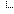
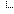

vbslib Test
vbslib Test テスト環境一覧
テスト環境一覧
 vbs_inc モジュールのテスト
vbs_inc モジュールのテスト [T_CommandPrompt] プロンプトを開く、閉じるテスト
[T_SuccessRet] /SuccessRet オプションによるエラーレベル
[T_StartFromOther] スクリプトが無いフォルダーから起動したとき
[T_Func] 関数、クラス
[T_GloVar] グローバル変数
[T_IncErr] vbs_inc.vbs が見つからないとき
[T_Setting] setting フォルダのテスト
[T_DupFunc] 関数シンボルが重複したとき
[T_DupClass] クラス名が重複したとき
[T_SynErr] ライブラリに文法エラー
[T_SynErr2] vbs_inc_setting.vbs に文法エラー
[T_DebugParam] デバッガ接続、パラメータ指定
[T_BatchParam] バッチファイルからパラメーターを指定
[T_Admin] 管理者へログインして実行する
[T_Var] vbslib の環境変数のテスト ユーザインターフェイスのテスト
[T_CommandPrompt] プロンプトを開く、閉じるテスト
[T_SuccessRet] /SuccessRet オプションによるエラーレベル
[T_StartFromOther] スクリプトが無いフォルダーから起動したとき
[T_Func] 関数、クラス
[T_GloVar] グローバル変数
[T_IncErr] vbs_inc.vbs が見つからないとき
[T_Setting] setting フォルダのテスト
[T_DupFunc] 関数シンボルが重複したとき
[T_DupClass] クラス名が重複したとき
[T_SynErr] ライブラリに文法エラー
[T_SynErr2] vbs_inc_setting.vbs に文法エラー
[T_DebugParam] デバッガ接続、パラメータ指定
[T_BatchParam] バッチファイルからパラメーターを指定
[T_Admin] 管理者へログインして実行する
[T_Var] vbslib の環境変数のテスト ユーザインターフェイスのテスト ファイル操作のテスト プロセス制御と include のテスト
システム、OS、レジストリのテスト テスト・プロンプト・モジュールのテスト テスト・スクリプト ver2 ・モジュールのテスト CALL に関するテスト
[T_Pass] 2つのテストを実施し、Pass する
[T_Fail] 2つのテストを実施し、1つ目を失敗する
[T_CurDir] 別のフォルダから相対パス指定
[T_RunVBS] RunVBSProg のテスト
[T_Debug] エラーが発生した場所でブレークする
[T_Log] テストログの内容
ファイル操作のテスト プロセス制御と include のテスト
システム、OS、レジストリのテスト テスト・プロンプト・モジュールのテスト テスト・スクリプト ver2 ・モジュールのテスト CALL に関するテスト
[T_Pass] 2つのテストを実施し、Pass する
[T_Fail] 2つのテストを実施し、1つ目を失敗する
[T_CurDir] 別のフォルダから相対パス指定
[T_RunVBS] RunVBSProg のテスト
[T_Debug] エラーが発生した場所でブレークする
[T_Log] テストログの内容 テスト実施に関するテスト
サンプルのテスト
[T_Prpt] 基本形のテスト
[T_SomeTests] 複数のテストスクリプト
[T_TestScErr] スクリプト内でエラーが発生したとき
[T_AutoDiff] 自動的に Diff ツールを開く
[T_Skip] テストをスキップする エラーハンドリングのテスト
[T_ErrInfo] ユーザへのエラー通知とデバッガ接続 [T_Err2] Err2 オブジェクトとデバッガーのテスト
[T_SetupDebugTools] デバッガ時の初期設定
[T_ErrOnNew] コンストラクタで発生したエラーを検出
[T_ChildProcess] サブ・プロセスへの受け渡し
ネットワークのテスト 開発環境のテスト
テスト実施に関するテスト
サンプルのテスト
[T_Prpt] 基本形のテスト
[T_SomeTests] 複数のテストスクリプト
[T_TestScErr] スクリプト内でエラーが発生したとき
[T_AutoDiff] 自動的に Diff ツールを開く
[T_Skip] テストをスキップする エラーハンドリングのテスト
[T_ErrInfo] ユーザへのエラー通知とデバッガ接続 [T_Err2] Err2 オブジェクトとデバッガーのテスト
[T_SetupDebugTools] デバッガ時の初期設定
[T_ErrOnNew] コンストラクタで発生したエラーを検出
[T_ChildProcess] サブ・プロセスへの受け渡し
ネットワークのテスト 開発環境のテスト